어떤 소리는
끝난 뒤에야
비로소 시작된다.
음악 프로듀서 소개 · 2026
메아리가
오는 곳
내가 좋아하는 두 프로듀서, 그리고 그들에게 배워서 만든 내 곡
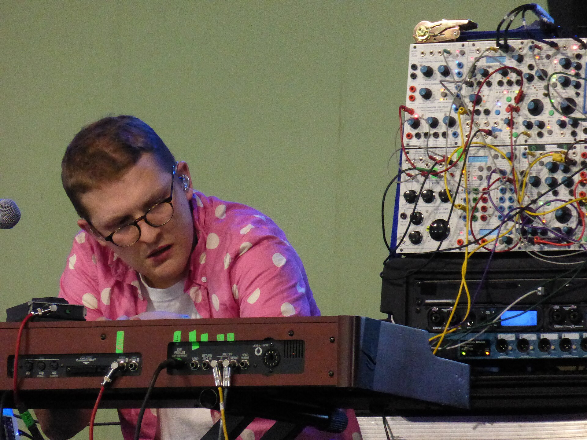
Floating Points
런던 · 신경과학 박사, DJ, 작곡가
Alon Mor
베를린 · 작곡가, 사운드 디자이너
두 사람은 같이 작업한 적이 없다. 내 작업실 스피커에서만 자주 만난다.
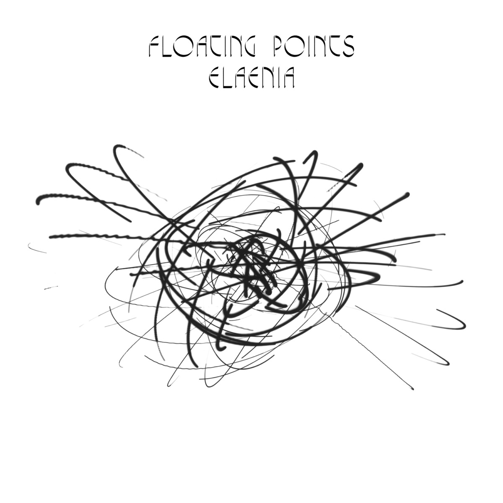
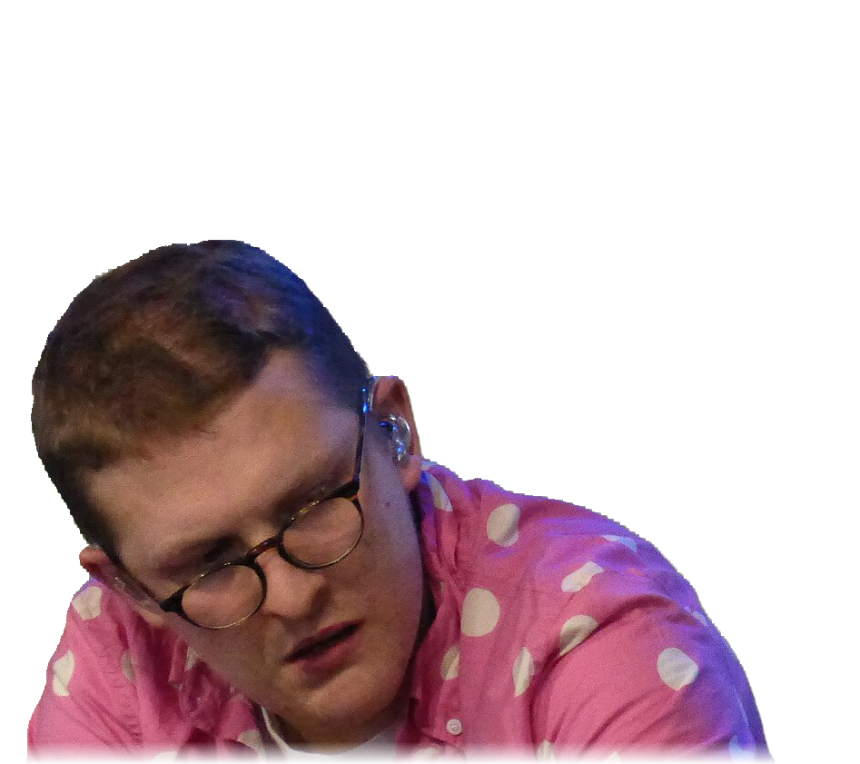
Side A · 33⅓ rpm
Floating
Points
신경과학 박사가 만드는 재즈와 클럽 음악
I — Floating Points
1부 · 신호
Floating
Points
샘 셰퍼드, 1986년 맨체스터
클럽에서 DJ를 하고, 곡을 쓰고, 신경과학 박사 학위까지 있다. 재즈, 소울, 하우스, 오케스트라를 가리지 않는다. 친구와 레이블 Eglo를 만들었고, 자기 레이블 Pluto도 있다. 레코드도 만 장 넘게 모았다.
10,000+
그가 가진 레코드 수. 재즈, 소울, 월드 뮤직이 대부분이다. (Groove, 2019)
I — Floating Points
뿌리 · 맨체스터
피아노,
레코드 가게,
동네 라디오
맨체스터의 Chetham's 음악학교에서 피아노를 배웠다. 학교 바로 옆 노던 쿼터에 레코드 가게가 몰려 있었고, 수업에서 안 가르치는 음악은 거기서 들었다. 지역 라디오 Key103은 본인 말로 “종교처럼” 들었다고 한다.
2024년 앨범 Cascade에는 Key103, Afflecks Palace라는 곡이 있다. 둘 다 그 시절 맨체스터에서 온 이름이다.
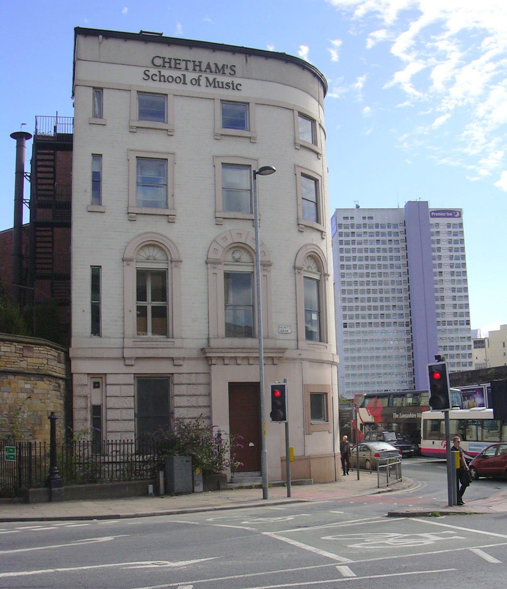
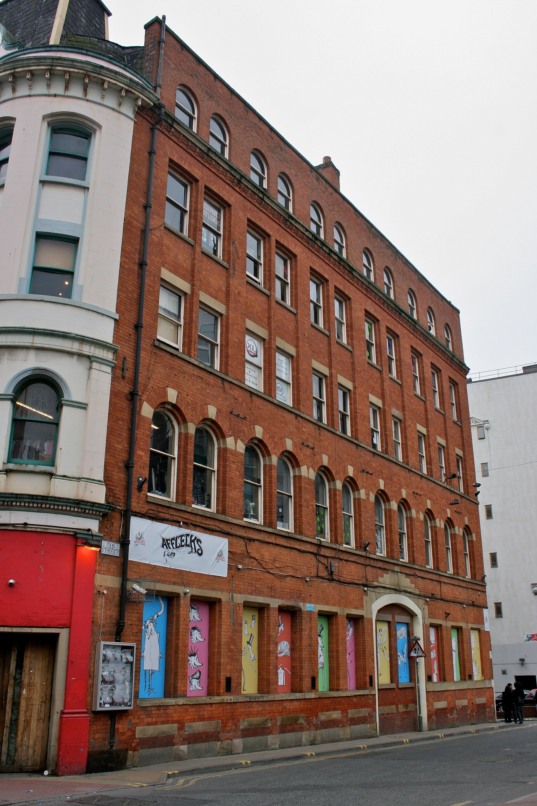
I — Floating Points
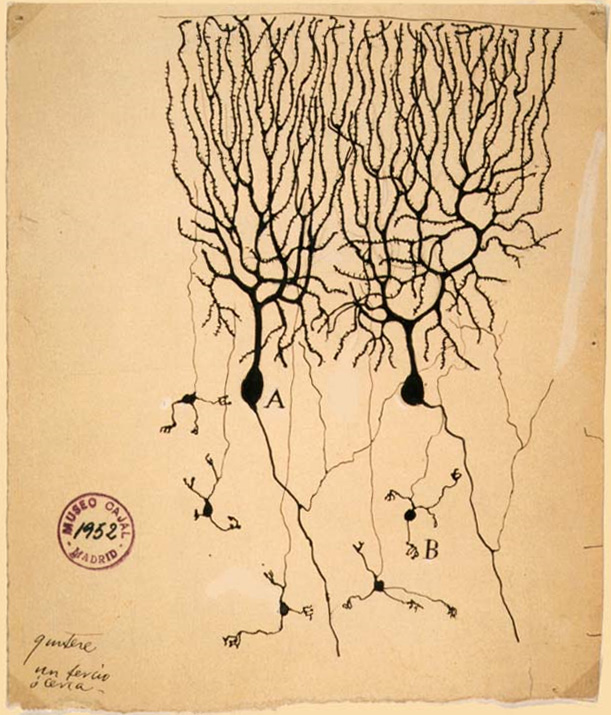
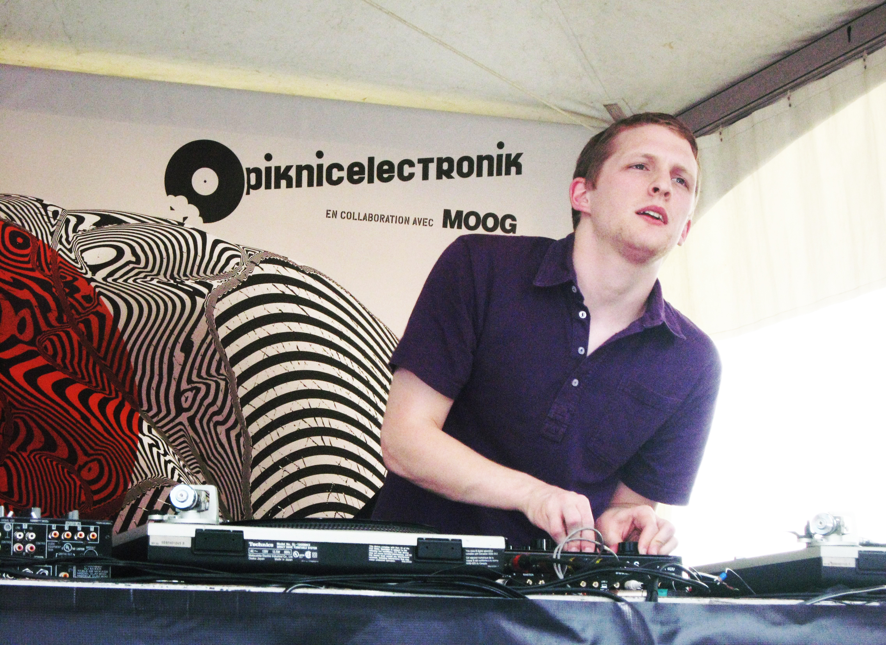
UCL · 신경과학 박사
밤 · 런던 클럽 Plastic People
박사 과정과
클럽 DJ를 같이
UCL에서 신경과학과 후성유전학으로 박사 학위를 받았다. 연구한 건 통증, 그리고 뉴런 안에서 이상하게 발현되는 RNA. 같은 시기에 밤에는 런던 클럽 Plastic People에서 DJ를 했다.
I — Floating Points
2015 · 첫 정규 앨범
꿈속의 새
앨범 제목은 꿈에서 나왔다. 신경과학자 데이비드 이글먼의 소설 『Sum』을 읽던 무렵, 새 한 마리가 숲에 삼켜지는 꿈을 꿨다고 한다. Elaenia는 남미에 사는 작은 새 이름이다. 처음엔 한 곡짜리 앨범으로 만들려다 결국 일곱 곡으로 나눴다.
I — Floating Points
2015 — 2026
여섯 장의 앨범
I — Floating Points
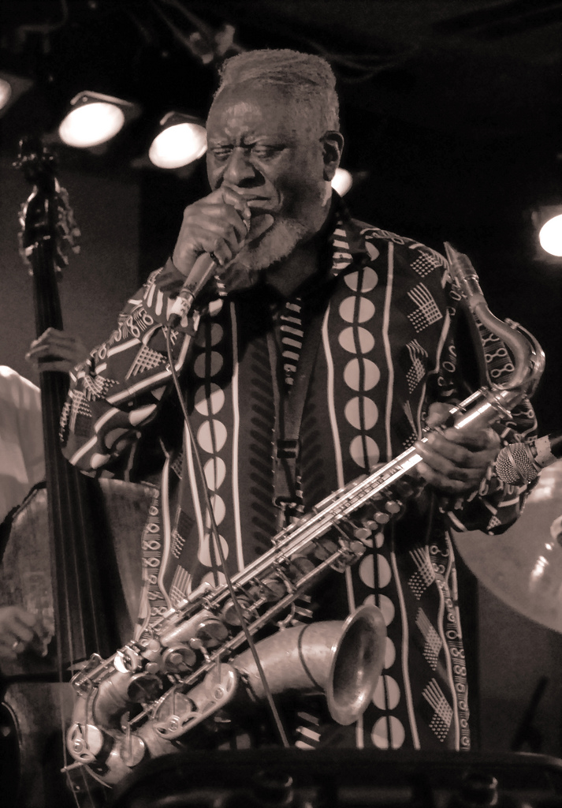
2015 → 2021 · Promises
“같이 앨범 하나 만들자.”
— Pharoah Sanders, 2015
일흔다섯 살의 거장이
스물아홉 살의 앨범을 들었다
존 콜트레인과 같이 연주했던 색소폰 연주자 Pharoah Sanders가 2015년에 Elaenia를 들었다. 둘이 점심을 먹었고, 그 자리에서 Sanders가 먼저 말을 꺼냈다.
런던 AIR 스튜디오에서 런던 심포니의 현악을 더했다. 이듬해 Sanders가 세상을 떠났고, 이 앨범이 그의 마지막이 됐다.
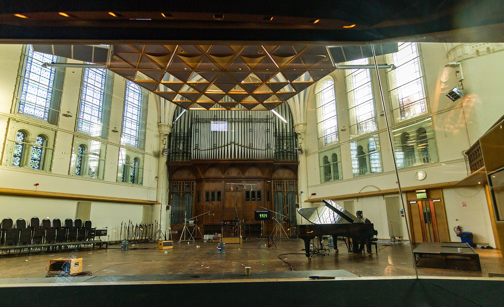
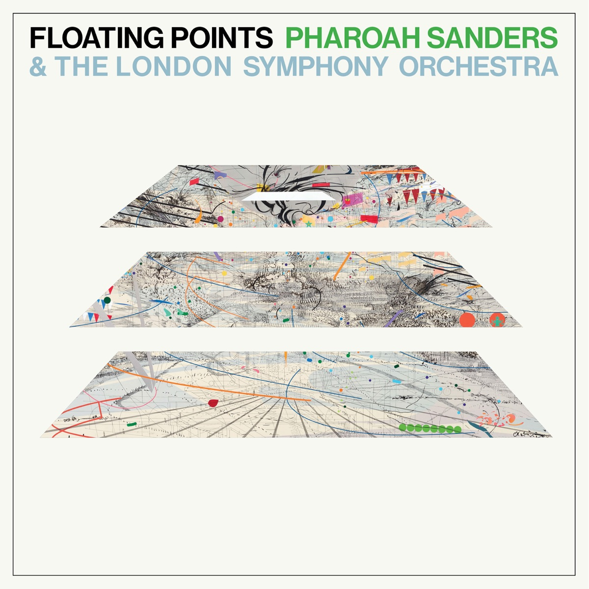
Promises · 2021
Floating Points, Pharoah Sanders & The London Symphony Orchestra
I — Floating Points
Promises · 2021 · Luaka Bop · 머큐리상 후보
하나의 모티프, 46분 33초
짧은 모티프 하나가 하프시코드, 피아노, 신시사이저로 옮겨 가면서 곡의 절반 가까이 계속 돌아온다. 음은 그대로인데 밑에 깔리는 소리가 계속 바뀐다.
Reflections — Mojave Desert · 2017
사막을 스튜디오로
2016년에 밴드를 데리고 모하비 사막으로 갔다. 벽도 천장도 없으니 소리가 어디에도 부딪히지 않고 그냥 흩어진다. 거기서 녹음한 곡 중 하나가 Kelso Dunes, 사진 속 이 모래 언덕이다. 모래가 미끄러질 때 낮게 웅웅 울려서 ‘노래하는 모래 언덕’이라고 불린다.
I — Floating Points
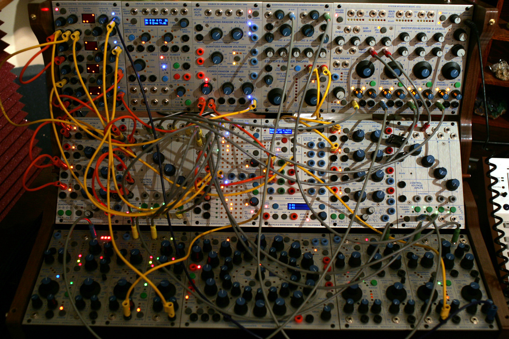
Crush · 2019 · Ninja Tune
말 대신
신시사이저로
2017년 The xx 투어에서 오프닝 무대를 맡았다. Buchla 모듈러 신시사이저로 즉흥 연주를 했는데, 소리가 생각보다 훨씬 거칠게 나왔다. 그걸 다듬어 5주 만에 낸 앨범이 Crush다. 가사가 없는 음악이라, 그때의 분노는 악기 소리로 대신 냈다고 한다.
5주
즉흥 연주에서 완성된 앨범까지 걸린 시간
LesAlpx · Crush, 2019
I — Floating Points
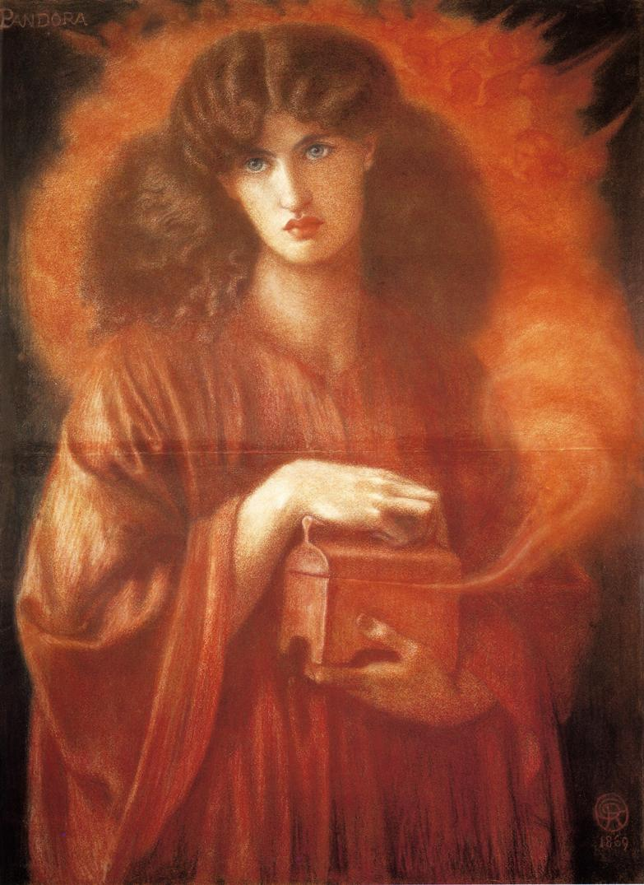
Mere Mortals · 2024 초연 · 2026 음반
판도라는
‘주는’ 사람이었다
샌프란시스코 발레단을 위해 쓴 첫 전막 발레 음악이다. 작업하면서 고전학자 나탈리 헤인스의 책을 읽었다고 한다. 판도라라는 이름은 원래 ‘모든 것을 주는 사람’이라는 뜻인데, 번역을 거치면서 ‘모든 선물을 받은 사람’, 재앙을 연 여자가 됐다는 이야기다. 그는 판도라를 호기심 많은 사람으로 봤다.
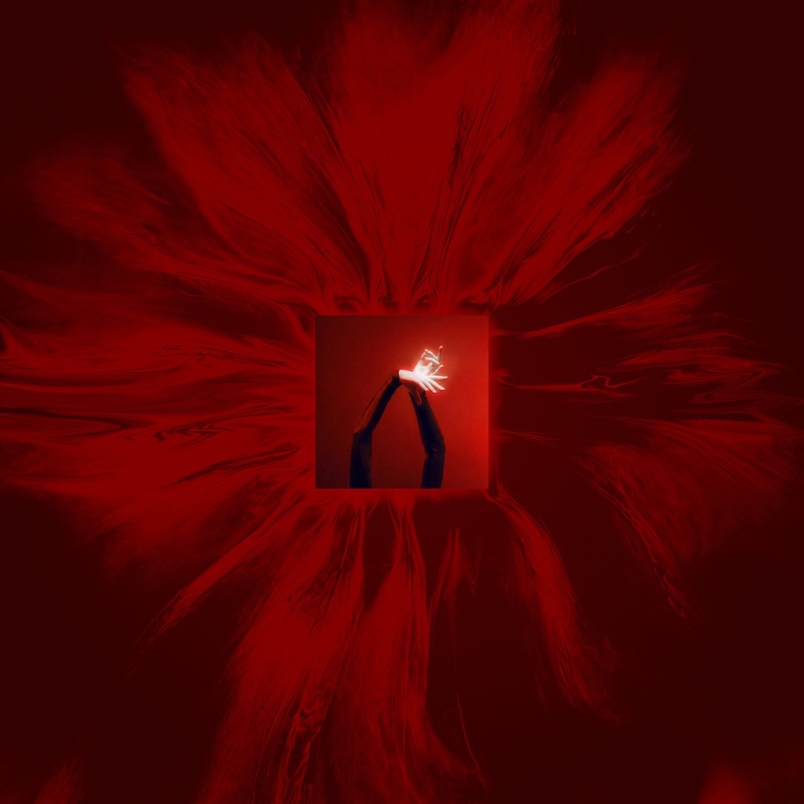
I — Floating Points
Floating Points에게서
내가
배운 것
제일 중요한 것
2장르는 섞어도 된다
재즈 색소폰, 오케스트라, 모듈러 신시사이저, 클럽 킥이 한 곡에 같이 들어가도 된다. 클래식이랑 실험적인 전자음악을 섞은 내 곡 Прокофьев는 여기서 시작했다.
같은 걸 오래 반복해도 된다
Promises는 46분 동안 같은 모티프를 놓지 않는다. 바뀌는 건 주변 악기와 공간뿐이다. 그걸 듣고 나서 한 프레이즈를 오래 끌고 가는 게 덜 무서워졌다.
머리로 따지고, 마지막엔 몸으로 듣는다
소리 구조는 과학자처럼 뜯어보지만, 좋은지 아닌지는 결국 춤추는 사람이 정한다.
F l o a t i n g P o i n t s
3부 · 내 곡
→ Прокофьев
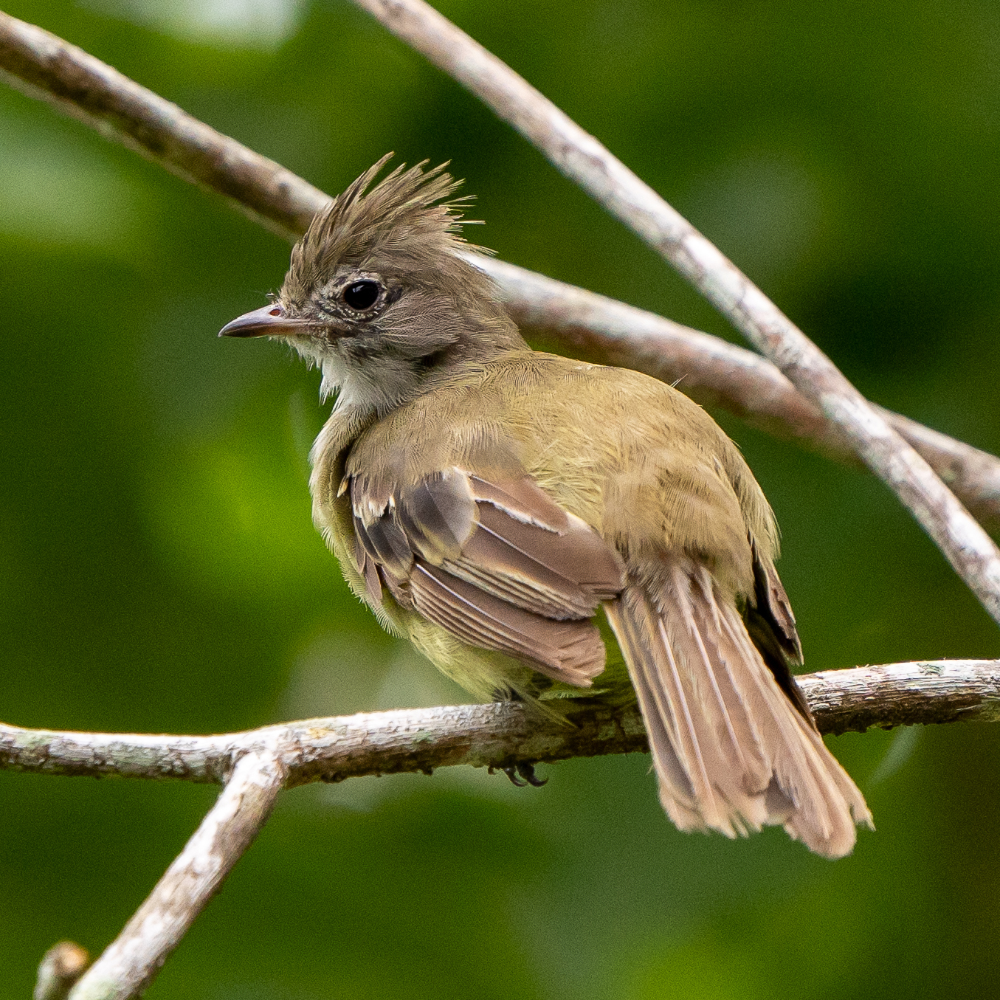
꿈속의 새는 숲에 삼켜졌다.
베를린에는 새소리를 늦춰서 합창으로 만드는 작곡가가 있다.
Side B · 33⅓ rpm
Alon
Mor
앨범마다 상상 속 나라를 하나씩 만드는 작곡가
II — Alon Mor
2부 · 신화
Alon
Mor
이스라엘 출신, 지금은 베를린
2009년부터 음악과 사운드 디자인을 했다. 앨범과 EP를 내고, 영화 예고편 사운드를 만들고, 전시 음악도 한다. 곡을 들어 보면 한스 짐머 같은 오케스트라에 덥스텝, 드럼앤베이스 저음이 붙고, 중간중간 글리치와 폴리 사운드가 끼어든다.
그는 인터뷰를 한 적이 없다.
그래서 그에 대해 알 수 있는 건 음악, 그리고 홈페이지에 본인이 쓴 짧은 글 하나가 전부다.
II — Alon Mor
그가 직접 쓴 이야기
폭발
어릴 때 그는 빙글빙글 돌면서 팔을 휘두르고 입으로 효과음을 냈다. 어른들은 그걸 ‘폭발’이라고 부르면서 크면 없어질 버릇이라고 생각했다. “스무 살 돼서도 폭발 만들 거야?” 그는 그렇다고 했다. 그 폭발은 머릿속에서 음악과 이야기, 영화를 지어내던 상상이었다고 한다.
“나는 폭발을 멈춘 적이 없다. 다른 건, 이제 모두가 그것을 들을 수 있다는 것.”
— Alon Mor, alonmor.com
II — Alon Mor
디스코그래피 · 2013 →
앨범마다
나라가 하나씩
첫 앨범 제목이 『Antesia로의 탈출』인데, Antesia는 그가 지어낸 땅 이름이다. 그 뒤 앨범들도 다 어딘가 다른 세계에서 온 것처럼 들린다. 전부 Bandcamp에서 무료로 들을 수 있다.
II — Alon Mor
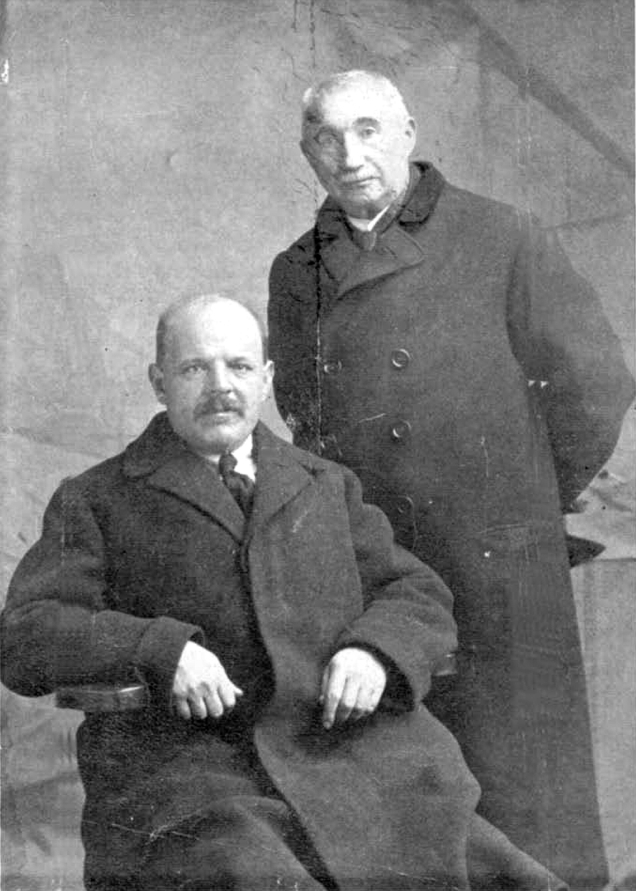
Within · 2024
백 년 전
베를린의 시인
2024년 앨범 Within의 가사는 히브리 시인 하임 나흐만 비알리크(1873–1934)의 시에서 가져왔다. 다섯 곡에 59분, 곡 제목은 Will, Faith, Glee, Persistence, Grace. 이 사진은 1920년 베를린에서 찍었다. 백 년 뒤 같은 도시에 사는 작곡가가 그 시로 노래를 만든 셈이다.
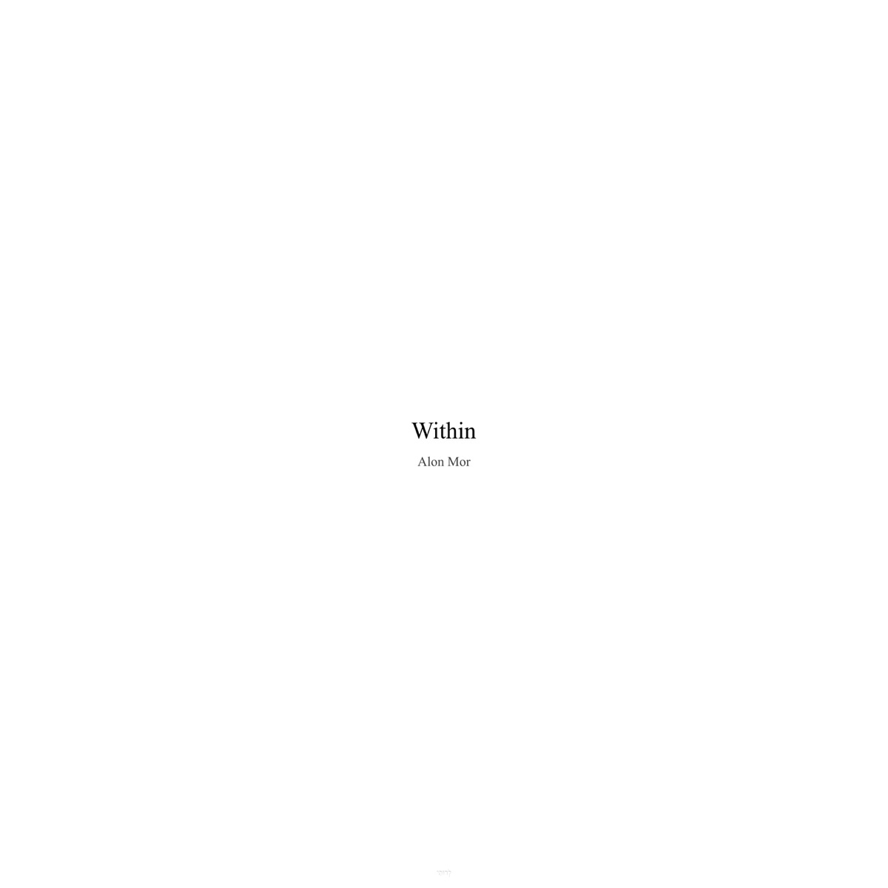
Within Will · 지금 나오는 곡
II — Alon Mor
리게티 · 슈톡하우젠 · 셰페르
ILL · 호러 게임 사운드트랙 · 2027 예정
새소리를
16배 느리게
갑자기 튀어나와 놀래키는 공포 대신, 그는 20세기 현대음악 작곡가들을 참고한다. 새소리를 느리게 틀면 사람이 신음하는 합창처럼 들리고, 채찍 소리는 리듬으로 쓴다.
II — Alon Mor
ILL 사운드트랙 싱글 · 2025
Whale Song
정체를 모르는 거대한 생물이 태어나서 몸부림치다가 죽는 이야기다. 진짜 고래 소리는 바닷속에서 수백 킬로미터를 간다. 이 곡도 멜로디보다 저음이 이야기를 끌고 간다.
모든 작품, 무료.
십 년 넘게 만든 음악을 전부 무료로 올려 두었다. 덕분에 나는 그의 음악을 처음부터 끝까지 마음대로 들으면서 공부할 수 있었다. 그리고 음악은 누구나 들을 수 있어야 한다는 걸 알게 됐다.
II — Alon Mor
Alon Mor에게서
내가
배운 것
곡보다 세계를 먼저
곡을 쓰기 전에 그 곡이 어디에 사는지부터 정한다. 어떤 땅이고 날씨는 어떤지. 소리는 그다음에 넣는다.
아무 소리나 악기가 된다
새, 채찍, 기계, 도시 소음. 늘리고 늦추고 비틀면 다 쓸 수 있다.
감정은 저음으로
저음을 꼭 세게만 쓸 필요는 없다. 무섭게도, 웅장하게도, 가끔은 따뜻하게도 쓸 수 있다.
그리고,
이제, 내 차례.
Floating Points
Promises — Movement 1
Floating Points, Pharoah Sanders · 2021 1
Alon Mor
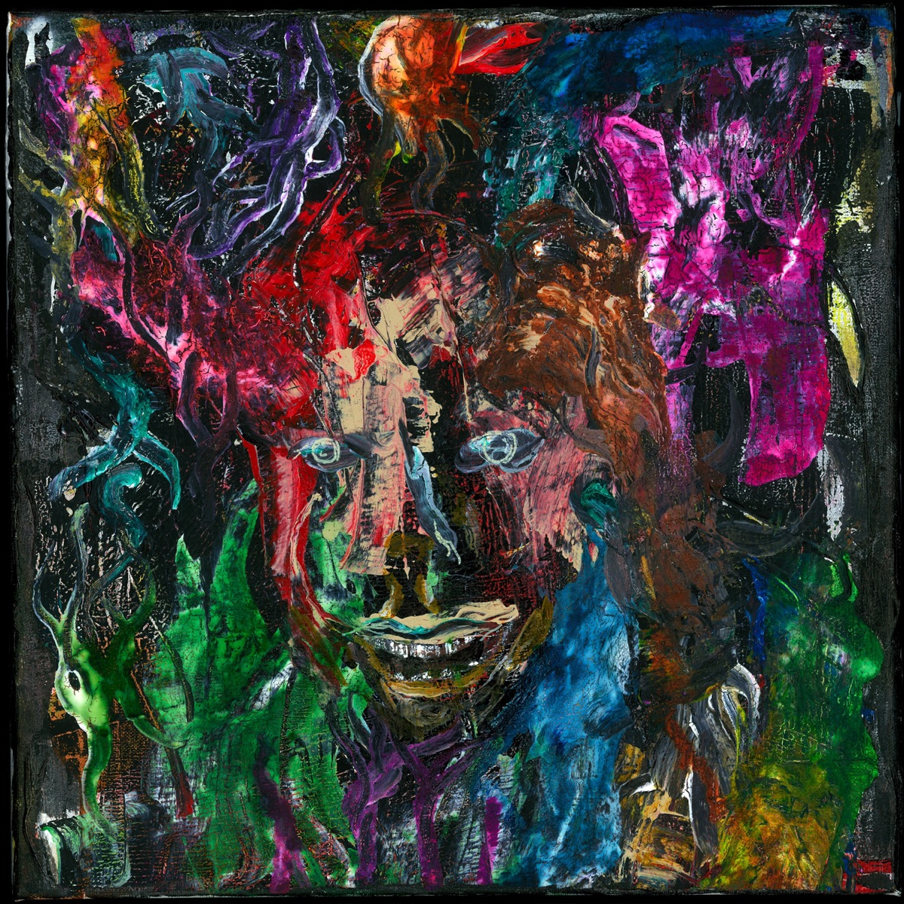
Echoes Follow
Alon Mor · Lands of Delight · 2019 2
Прокофьев
Side C · 33⅓ rpm · Kiayo
나
두 사람에게 배워서 만든 곡 두 개
물결 두 개가 만나면 겹치는 곳에 새 무늬가 생긴다.
내 곡도 두 사람한테 받은 영향이 겹친 데서 나왔다.
III — 나
Totem
III — 나
Прокофьев
С. С. ПРОКОФЬЕВ · 1891–1953
1953년 3월 5일. 프로코피예프는 스탈린과 같은 날 죽었다. 소련의 대표 음악 잡지는 그의 부고를 116쪽에 실었다. 앞의 115쪽은 전부 스탈린이었다.